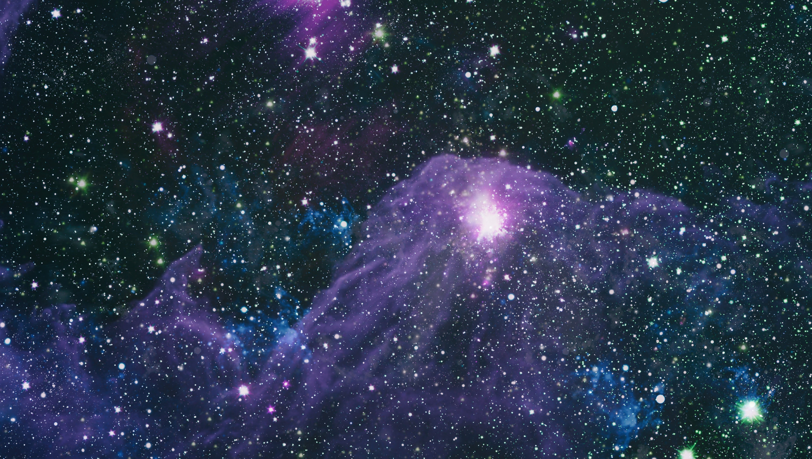
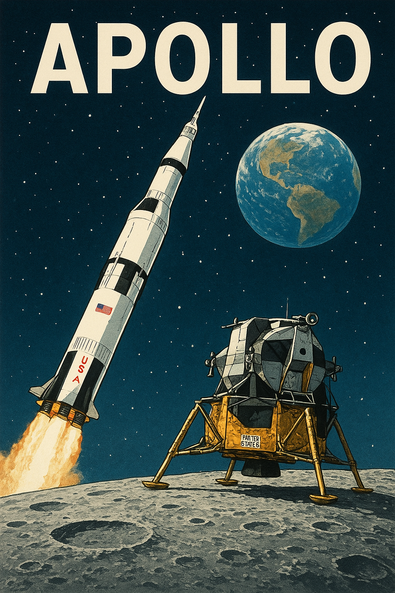

A Jornada Começa Agora
A exploração espacial representa a curiosidade inata da humanidade e nossa busca incessante por
conhecimento. Desde os primeiros passos na Lua até as sondas robóticas enviadas a planetas
distantes, cada missão expande nossos horizontes e revela o nosso lugar no vasto cosmos.

Atributo width="100%" e a classe w-full garantem a responsividade da imagem.
Grandes Conquistas
Estas são algumas das missões que redefiniram nossa compreensão do universo:
Programa Apollo
A série de missões da NASA que culminou no pouso do homem na Lua, um feito que demonstrou o
incrível potencial da engenharia humana.

Sondas Voyager
Lançadas em 1977, as Voyagers continuam a transmitir dados do espaço interestelar, sendo os
objetos humanos mais distantes da Terra.
Entre em Contato
Tem perguntas sobre o universo ou sugestões para o site? Fale conosco!
Enviar Email para Contato
Para saber mais sobre a NASA, visite:
Site Oficial da NASA
Este site é um projeto educacional para demonstração de atributos HTML.